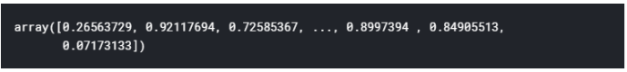

Decision Tree¶
PENGERTIAN DECISION TREE¶
Decision tree menggunakan strukur pohon berhierarki. Konsep dari metode ini adalah mengubah data menjadi pohon keputusan dan aturan-aturan keputusan. Manfaat dari penggunaan metode ini adalah kemampuannya memecah proses pengambilan keputusan yang kompleks menjadi lebih sederhana sehingga pengambilan keputusan lebih mudah dipahami dan lebih mudah di interpetasi. Kualitas dari suatu hasil decision trees tergantung dari bagaimana pohon tersebut didesain. Metode lain yang bisa digunakan untuk melakukan klasifikasi yaitu Random Forest yang merupakan pengembangan dari decision tree.
Decision Tree (pohon keputusan) secara khusus melakukan pemodelan dengan berusaha memodel record yang tersedia ke dalam bentuk pohon keputusan. Dimana dalam suatu pohon keputusan akan ada interior node yang dilabeli dengan suatu variabel. Dari setiap interior node akan keluar tanda panah yang dilabeli dengan nilai dari variabel yang ada pada interior node tersebut. Di bagian akhir pohon keputusan akan terdapat leaf yang dilabeli dengan class atau category. Dalam penggunaannya, atau dalam pengimplementasian model decision trees ini ke dalam suatu sistem (umumnya sistem pendukung keputusan), model pohon keputusan yang didapat perlu diekstrak ke dalam bentuk rule-rule yang berbentuk if – then.
BERIKUT ADALAH PROGRAM YANG AKAN SAYA TAMPILKAN YAITU **EXPLORING DECISION TREES USING PUBG DATA
PUBG¶
Video game gaya Battle Royale telah mengejutkan dunia. 100 pemain dijatuhkan ke sebuah pulau dengan tangan kosong dan harus menjelajahi, mengais, dan menghilangkan pemain lain sampai hanya satu yang tersisa, semuanya sementara zona bermain terus menyusut.
(PUBG) Player Unknown Battle Grounds telah menikmati popularitas besar. Dengan lebih dari 50 juta kopi terjual, ini adalah game terlaris kelima sepanjang masa, dan memiliki jutaan pemain bulanan aktif.Tim di PUBG telah membuat data game resmi tersedia untuk umum untuk dijelajahi dan diambil di luar "The Blue Circle." Kompetisi ini bukan situs PUBG resmi atau berafiliasi - Kaggle mengumpulkan data yang dimungkinkan melalui API Pengembang PUBG
Anda diberi lebih dari 65.000 data gim pemain yang dianonimkan, dipecah menjadi set pelatihan dan pengujian, dan diminta untuk memprediksi penempatan akhir dari statistik dalam gim akhir dan peringkat pemain awal.
Apa strategi terbaik untuk menang di PUBG? Haruskah Anda duduk di satu tempat dan menyembunyikan jalan menuju kemenangan, atau apakah Anda perlu menjadi yang terbaik? Biarkan data yang berbicara!
%matplotlib inline
import numpy as np
import pandas as
import ostrain = pd.read_csv('Downloads/input/train_V2.csv')
test = pd.read_csv('Download/input/test_V2.csv')
train.head()train.shape, test.shapetest.head()train.columnstarget_col = 'winPlacePerc'
train.drop(2744604, inplace=True, errors='ignore')Decision Trees¶
Mari kita membangun penyesuai pohon keputusan, Regrasor adalah model pembelajaran meachine yang digunakan untuk memprediksi variabel kontinu. Karena Kami berharap memiliki hubungan fungsional berkelanjutan antara input dan output akhir. Lebih baik menggunakan Regrassor untuk masalah ini
Prepare data¶
train.dtypestrain['Id'].describe()train['groupId'].describe()train['matchId'].describe()train['matchType'].describe()train['matchType'].unique()pd.get_dummies(train['matchType']).head()# Dapatkan satu penyandian kolom yang cocok dengan MatchType
one_hot_train = pd.get_dummies(train['matchType'])
# Jatuhkan kolom B seperti yang sekarang dikodekan
train = train.drop('matchType', axis = 1)
# Bergabung dengan df yang disandikan
train = train.join(one_hot_train)
train.head()# Get one hot encoding of columns matchType
one_hot_test = pd.get_dummies(test['matchType'])
# Drop column B as it is now encoded
test = test.drop('matchType', axis = 1)
# Join the encoded df
test = test.join(one_hot_test)
test.head()Feature Engineering¶
print("Adding Features")
def add_feature(df):
df['headshotrate'] = df['kills']/df['headshotKills']
df['killStreakrate'] = df['killStreaks']/df['kills']
df['healthitems'] = df['heals'] + df['boosts']
df['totalDistance'] = df['rideDistance'] + df["walkDistance"] + df["swimDistance"]
df['killPlace_over_maxPlace'] = df['killPlace'] / df['maxPlace']
df['headshotKills_over_kills'] = df['headshotKills'] / df['kills']
df['distance_over_weapons'] = df['totalDistance'] / df['weaponsAcquired']
df['walkDistance_over_heals'] = df['walkDistance'] / df['heals']
df['walkDistance_over_kills'] = df['walkDistance'] / df['kills']
df['killsPerWalkDistance'] = df['kills'] / df['walkDistance']
df["skill"] = df["headshotKills"] + df["roadKills"]
df[df == np.Inf] = np.NaN
df[df == np.NINF] = np.NaN
print("Removing Na's From DF")
df.fillna(0, inplace=True)
train.shape, test.shapefrom sklearn.model_selection import train_test_split
train, val = train_test_split(train, test_size=0.2)
trainIds = train['Id']
testIds = test['Id']
#??train.drop
x_train = train.drop(['Id', 'groupId', 'matchId', target_col], axis=1)
x_train.head(1y_train = train[target_col]
y_train.head()x_val = val.drop(['Id', 'groupId', 'matchId', target_col], axis=1)
x_val.head(1)y_val = val[target_col]
y_val.head()x_test = test.drop(['Id', 'groupId', 'matchId'], axis=1)
x_test.head(1)x_train.shape, x_test.shapefrom sklearn.tree import DecisionTreeRegressor
#%timeit
dtree=DecisionTreeRegressor(max_depth=3)
dtree.fit(x_train, y_train)dtree.score(x_train, y_train)dtree.score(x_val, y_val)from IPython.display import SVG
from graphviz import Source
from sklearn import tree
graph = Source( tree.export_graphviz(dtree, out_file=None, feature_names=x_train.columns))
SVG(graph.pipe(format='svg')p_val = dtree.predict(x_val)
def mae(p, t):
return np.sum(np.abs(p - t)) / len(p)
mae(p_val, y_val)Decision tree model¶
from sklearn.tree import DecisionTreeRegressor
dtree=DecisionTreeRegressor(max_depth=15)
dtree.fit(x_train, y_train)
def print_score(mm):
print("train r^2 " + str(mm.score(x_train, y_train)))
print("validation r^2 " + str(mm.score(x_val, y_val)))
p_val = mm.predict(x_val)
p_train = mm.predict(x_train)
print("mean absolute error(Train): " + str(mae(p_train, y_train)))
print("mean absolute error(Validation): " + str(mae(p_val, y_val)))
print_score(dtree)p_test = dtree.predict(x_test)
p_test
submission = pd.DataFrame()
submission['Id'] = testIds
submission[target_col] = p_test
submission.head()submission.to_csv("submission.csv", index=False)
def train_and_get_score(max_depth):
dtree=DecisionTreeRegressor(max_depth=max_depth)
dtree.fit(x_train[:10000], y_train[:10000])
p_val = dtree.predict(x_val[:1000])
p_train = dtree.predict(x_train[:10000])
return mae(p_train, y_train[:10000]), mae(p_val, y_val[:1000])
train_and_get_score(5)train_score = []
valid_score = []
x_axis = []
for max_depth in range(1, 40, 5):
ts, vs = train_and_get_score(max_depth)
train_score.append(ts)
valid_score.append(vs)
x_axis.append(max_depth)
import matplotlib.pyplot as plt
plt.plot(x_axis, train_score,)
plt.plot(x_axis, valid_score)
plt.ylabel('Score')
plt.xlabel('max_depth')
plt.show()Random forest¶
from sklearn.ensemble import RandomForestRegressor
model = RandomForestRegressor(n_jobs=-1, max_depth=15, max_features='sqrt', n_estimators=100)
%time model.fit(x_train, y_train)print_score(model)model.estimators_[0]print_score(model.estimators_[0])#for dtree_model in model.estimators_:
# print_score(dtree_model)
# print("------------------------------------")
p_test = model.predict(x_test)
submission = pd.DataFrame()
submission['Id'] = testIds
submission[target_col] = p_test
submission.to_csv("submission_random_forest_30.csv", index=False)
feature_imp = pd.DataFrame(model.feature_importances_,
index = x_train.columns,
columns=['importance']).sort_values('importance'feature_impfeature_imp['importance'].nlargest(10).plot(kind='barh')from lightgbm import LGBMRegressor
params = {
'n_estimators': 100,
'learning_rate': 0.3,
'num_leaves': 30,
'objective': 'regression_l2',
'metric': 'mae',
'verbose': -1,
}
model = LGBMRegressor(**params)
model.fit(
x_train, y_train,
eval_metric='mae',
verbose=20,
)
print_score(model)p_test = model.predict(x_test)
submission = pd.DataFrame()
submission['Id'] = testIds
submission[target_col] = p_test
submission.to_csv("submission_lightgdm.csv", index=False)
feature_imp = pd.DataFrame(model.feature_importances_,
index = x_train.columns,
columns=['importance']).sort_values('importance', ascending=False)
feature_imp['importance'].nlargest(10).plot(kind='barh')** Kekurangan Pohon Keputusan**
• Terjadi overlap terutama ketika kelas-kelas dan criteria yang digunakan jumlahnya sangat banyak. Hal tersebut juga dapat menyebabkan meningkatnya waktu pengambilan keputusan dan jumlah memori yang diperlukan.
• Pengakumulasian jumlah eror dari setiap tingkat dalam sebuah pohon keputusan yang besar.
• Kesulitan dalam mendesain pohon keputusan yang optimal.
• Hasil kualitas keputusan yang didapatkan dari metode pohon keputusan sangat tergantung pada bagaimana pohon tersebut didesain.
** Kelebihan Pohon Keputusan**
Kelebihan dari metode pohon keputusan adalah:
• Daerah pengambilan keputusan yang sebelumnya kompleks dan sangat global, dapat diubah menjadi lebih simpel dan spesifik.
• Eliminasi perhitungan-perhitungan yang tidak diperlukan, karena ketika menggunakan metode pohon keputusan maka sample diuji hanya berdasarkan kriteria atau kelas tertentu.
• Fleksibel untuk memilih fitur dari internal node yang berbeda, fitur yang terpilih akan membedakan suatu kriteria dibandingkan kriteria yang lain dalam node yang sama. Kefleksibelan metode pohon keputusan ini meningkatkan kualitas keputusan yang dihasilkan jika dibandingkan ketika menggunakan metode penghitungan satu tahap yang lebih konvensional
• Dalam analisis multivariat, dengan kriteria dan kelas yang jumlahnya sangat banyak, seorang penguji biasanya perlu untuk mengestimasikan baik itu distribusi dimensi tinggi ataupun parameter tertentu dari distribusi kelas tersebut. Metode pohon keputusan dapat menghindari munculnya permasalahan ini dengan menggunakan criteria yang jumlahnya lebih sedikit pada setiap node internal tanpa banyak mengurangi kualitas keputusan yang dihasilkan.